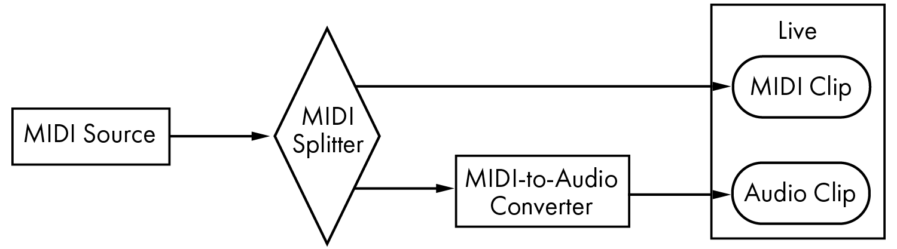

39. MIDI Fact Sheet
In conjunction with our work on the audio engine, Ableton has spent additional effort analyzing Live‘s MIDI timing and making improvements where necessary. We wrote this fact sheet to help users understand the problems involved in creating a reliable and accurate computer-based MIDI environment, and to explain Live‘s approach to solving these problems.
The MIDI timing issues discussed in this chapter are generally not applicable to users with high-quality audio and MIDI hardware. If you have already invested time and money into optimizing these factors in your studio, and are not experiencing problems with MIDI timing, you probably do not need this information.
39.1 Ideal MIDI Behavior
To understand how MIDI works within a digital audio workstation (DAW), it is helpful to introduce some common terms and concepts. A DAW must be able to accommodate three distinct MIDI-related scenarios:
- Recording refers to sending MIDI note and controller information from a hardware device (such as a MIDI keyboard) into a DAW for storage. An ideal recording environment would capture this incoming information with perfect timing accuracy in relation to the timeline of the song — as accurately as an audio recording.
- Playback refers to two related scenarios when dealing with DAWs. The first involves sending MIDI note and controller information from the DAW to a hardware device such as a synthesizer. The second involves converting stored MIDI information into audio data within the computer, as played back by a plug-in device such as the Operator synthesizer. In both cases, an ideal playback environment would output a perfect reproduction of the stored information.
- Playthrough involves sending MIDI note and controller information from a hardware device (such as a MIDI keyboard) into the DAW and then, in real-time, back out to a hardware synthesizer or to a plug-in device within the DAW. An ideal playthrough environment would “feel“ as accurate and responsive as a physical instrument such as a piano.
39.2 MIDI Timing Problems
The realities of computer-based MIDI are complex, and involve so many variables that the ideal systems described above are impossible to achieve. There are two fundamental issues:
- Latency refers to inherent and consistent delay in a system. This is a particular problem in a DAW because digital audio cannot be transferred into or out of an audio interface in real time, and must instead be buffered. But even acoustic instruments exhibit a certain degree of latency; in a piano, for example, there is some amount of delay between the time a key is depressed and the time the hammer mechanism actually activates the string. From a performance perspective, small latency times are generally not a problem because players are usually able to adapt the timing of their playing to compensate for delays — as long as the delays remain consistent.
- Jitter refers to inconsistent or random delay in a system. Within a DAW, this can be a particular problem because different functions within the system (e.g., MIDI, audio and the user interface) are processed separately. Information often needs to be moved from one such process to another — when converting MIDI data into a plug-in‘s playback, for example. Jitter-free MIDI timing involves accurate conversion between different clocks within the system‘s components — the MIDI interface, audio interface, and the DAW itself. The accuracy of this conversion depends on a variety of factors, including the operating system and driver architecture used. Jitter, much more so than latency, creates the feeling that MIDI timing is “sloppy“ or “loose.“
39.3 Live’s MIDI Solutions
Ableton‘s approach to MIDI timing is based on two key assumptions:
- In all cases, latency is preferable to jitter. Because latency is consistent and predictable, it can be dealt with much more easily by both computers and people.
- If you are using playthrough while recording, you will want to record what you hear — even if, because of latency, this occurs slightly later than what you play.
Live addresses the problems inherent in recording, playback and playthrough so that MIDI timing will be responsive, accurate and consistently reliable. In order to record incoming events to the correct positions in the timeline of a Live Set, Live needs to know exactly when those events were received from the MIDI keyboard. But Live cannot receive them directly — they must first be processed by the MIDI interface‘s drivers and the operating system. To solve this problem, the interface drivers give each MIDI event a timestamp as they receive it, and those are passed to Live along with the event so that Live knows exactly when the events should be added to the clip.
During playthrough, a DAW must constantly deal with events that should be heard as soon as possible, but which inevitably occurred in the past due to inherent latency and system delays. So a choice must be made: should events be played at the moment they are received (which can result in jitter if that moment happens to occur when the system is busy) or should they be delayed (which adds latency)? Ableton‘s choice is to add latency, as we believe that it is easier for users to adjust to consistent latency than to random jitter.
When monitoring is enabled during recording, Live adds an additional delay to the timestamp of the event based on the buffer size of your audio hardware. This added latency makes it possible to record events to the clip at the time you hear them — not the time you play them.
For playback of hardware devices, Live also generates timestamps that it attempts to communicate to the MIDI interface drivers for scheduling of outgoing MIDI events. Windows MME drivers cannot process timestamps, however, and for devices that use these drivers, Live schedules outgoing events internally.
Even during high system loads that cause audio dropouts, Live will continue to receive incoming MIDI events. In the event of audio dropouts, there may be timing errors and audio distortion during playthrough, but Live should still correctly record MIDI events into clips. Later, when the system has recovered from the dropouts, playback of these recorded events should be accurate.
39.4 Variables Outside of Live’s Control
In general, timestamps are an extremely reliable mechanism for dealing with MIDI event timing. But timestamps are only applicable to data within the computer itself. MIDI data outside of the computer can make no use of this information, and so timing information coming from or going to external hardware is processed by the hardware as soon as it arrives, rather than according to a schedule. Additionally, MIDI cables are serial, meaning they can only send one piece of information at a time. In practice, this means that multiple notes played simultaneously cannot be transmitted simultaneously through MIDI cables, but instead must be sent one after the other. Depending on the density of the events, this can cause MIDI timing problems.
Another issue that can arise, particularly when working with hardware synthesizers from the early days of MIDI, is that the scan time of the device may occur at a relatively slow rate. Scan time refers to how often the synthesizer checks its own keyboard for input. If this rate is too slow, jitter may be introduced.
Of course, any such timing problems present at the hardware level may be multiplied as additional pieces of gear are added to the chain.
Even within the computer, the accuracy of timestamps can vary widely, depending on the quality of the MIDI hardware, errors in driver programming, etc. Live must assume that any timestamps attached to incoming MIDI events are accurate, and that outgoing events will be dealt with appropriately by any external hardware. But both situations are impossible for Live to verify.
Tests and Results
Our procedure for testing the timing of incoming MIDI events is represented in the following diagram:

The output of a MIDI Source (a keyboard or other DAW playing long sequences of random MIDI events) is fed to a zero-latency hardware MIDI Splitter. One portion of the splitter‘s output is recorded into a new MIDI clip in Live. The other portion is fed to a MIDI-to-Audio Converter. This device converts the electrical signal from the MIDI source into simple audio noise. Because the device does not interpret the MIDI data, it performs this conversion with zero-latency. The converter‘s output is then recorded into a new audio clip in Live. In an ideal system, each event in the MIDI clip would occur simultaneously with the corresponding event in the audio clip. Thus the difference in timing between the MIDI and audio events in the two clips can be measured to determine Live‘s accuracy.
In order to assess MIDI performance under a variety of conditions, we ran the tests with three different audio/MIDI combo interfaces at different price points, all from well-known manufacturers. We will refer to these interfaces as A, B and C. All tests were performed with a CPU load of approximately 50% on both macOS and Windows machines, at both 44.1 and 96 kHz and at three different audio buffer sizes, for a total of 36 discrete test configurations.
Windows:
- Interface A: The maximum jitter was +/- 4 ms, with the majority of the jitter occurring at +/- 1 ms.
- Interface B: For most of the tests, the maximum jitter was +/- 3 or 4 ms. At 96 kHz and 1024 sample buffer, there were a small number of events with +/- 5 ms of jitter. At 44.1 kHz and 512 sample buffer, occasional events with +/- 6 ms occurred. In all cases, the majority of the jitter occurred at +/- 1 ms.
- Interface C: For most of the tests, the maximum jitter was +/- 5 ms. At 96 kHz and 512 sample buffer, there were a small number of events with between +/- 6 and 8 ms of jitter. At 44.1 kHz and 1024 sample buffer, there were a small number of events with jitter as high as +/- 10 ms. In all cases, the majority of the jitter occurred at +/- 1 ms.
macOS:
- Interface A: At 44.1 kHz and 1152 sample buffer, jitter was fairly evenly distributed between +/- 4 and 11 ms. For all other tests, the maximum jitter was +/- 5 ms. In all tests, the majority of the jitter occurred at +/- 1 ms.
- Interface B: For most of the tests, the maximum jitter was +/- 4 or 5 ms. At 44.1 kHz and 1152 sample buffer, there was a fairly even distribution of jitter between +/- 2 and 11 ms. In all cases, the majority of the jitter occurred at +/- 1 ms.
- Interface C: In all tests, the maximum jitter was +/- 1 ms, with most events occurring with no jitter.
We also performed a similar procedure for testing the timing of outgoing MIDI events, as represented in the following diagram:

In all cases, the output tests showed comparable results to the input tests.
39.5 Tips for Achieving Optimal MIDI Performance
In order to help users achieve optimal MIDI performance with Live, we have provided a list of recommended practices and program settings.
- Use the lowest possible buffer sizes available on your audio hardware, thereby keeping latency to a minimum. Audio buffer controls are found in the Audio tab of Live‘s Settings, and vary depending on the type of hardware you‘re using.
- Use a high quality MIDI interface with the most current drivers in order to ensure that MIDI timestamps are generated and processed as accurately as possible.
- Do not enable track monitoring if you are recording MIDI while listening directly to a hardware device such as an external synthesizer (as opposed to listening to the device‘s audio through Live via the External Instrument device). Likewise, disable track monitoring when recording MIDI data that is generated by another MIDI device (such as a drum machine). When monitoring is enabled, Live adds latency to compensate for playthrough jitter. Therefore, it is important to only enable monitoring when actually playing through.
39.6 Summary and Conclusions
We hope this helps users understand a variety of related topics:
- The inherent problems in computer-based MIDI systems.
- Our approach to solving these problems in Live.
- Additional variables that we cannot account for.
As mentioned before, the best way to solve MIDI timing issues in your studio is to use the highest-quality hardware components available. For users of such components, all software MIDI systems should perform with no noticeable issues. For users with less-than-optimal hardware, however, Live still offers an additional degree of accuracy by minimizing jitter, but at the expense of a small amount of additional latency.